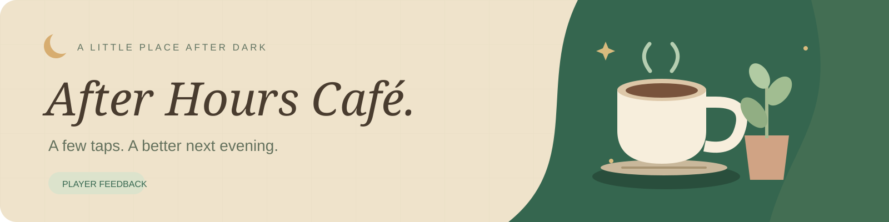

Design preview · answers stay in this page and are never sent. The published Google Form will use Google's native controls and this question flow.
☕
A little feedback goes a long way.
Preview complete. No response was submitted.
Mannan · After Hours Café · PC game prototype research